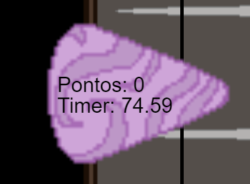

Ajude o Bardo
História do jogo
"Um jogo onde o jogador ajuda o "Bardo" a completar sua canção para conquistar o coração de sua sogra" O jogo inclui o uso do Hino brasileiro utilizado de forma irônica junto de uma estética "Rock" com a utilização de imagens de guitarras, contrastando diretamente com a música apenas cantada, com o objetivo de tornar o jogo mais lúdico e divertido para o jogador.
Jogabilidade
Aperte as teclas a tempo com as notas caindo, acerte e ganhe pontos, erre e perca-os
-Controle as teclas com "Q W E R"
-Mantenha um combo de acertos para aumentar sua pontuação
-Não erre muitas vezes seguidas, senão sua pontuação vai se esvair
Personagens do Jogo
Bardo
"Um músico que canta pelo amor" o protagonista da trama.